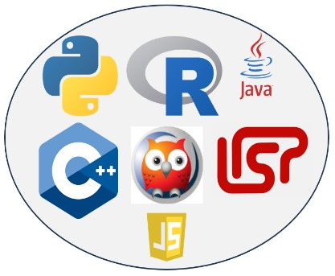

Programming Languages for AI
Artificial Intelligence (AI) development involves a variety of programming languages, each with its
unique features and applications. Some of the most commonly used programming languages for AI include:

Python:
Widely regarded as the leading language for AI due to its simplicity
and
readability, Python has a vast array of libraries and frameworks like TensorFlow, PyTorch, and
Keras,
making it ideal for machine learning, deep learning, and natural language processing.
R:
Particularly strong in statistical analysis and data visualization, R is a
preferred choice for data science and statistical AI applications. It offers various packages for
machine learning and is highly effective in handling large datasets.
Java:
Known for its portability, Java is used in AI due to its ease of use,
debugging ease, and package services. It's also well-suited for large-scale, enterprise-level
applications and has a strong community support.
C++:
Offering faster execution of programs, C++ is used in AI when speed is a
critical factor, such as in real-time processing of data. It's particularly useful in AI projects
that
involve hardware level manipulation or require high-performance computing.
Prolog:
One of the older programming languages, Prolog is associated with
symbolic AI and is particularly well-suited for projects involving rule-based logical queries and
abstract problem solving, such as in expert systems.
LISP (List Processing):
Known as the oldest AI programming language, LISP is
used
for AI programming due to its excellent prototyping capabilities, automatic garbage collection, and
dynamic creation of new objects. It's particularly favored in research and academic development.
JavaScript:
With the rise of browser-based applications, JavaScript has also
found its way into AI development. Frameworks like Brain.js for neural networks have made JavaScript
a
viable option for AI projects that need to be integrated into web applications.
Each of these languages has its strengths and is chosen based on the specific requirements of the AI
project, such as speed, ease of coding, support for complex algorithms, or suitability for statistical
analysis.